parking only!
October 18, 2024
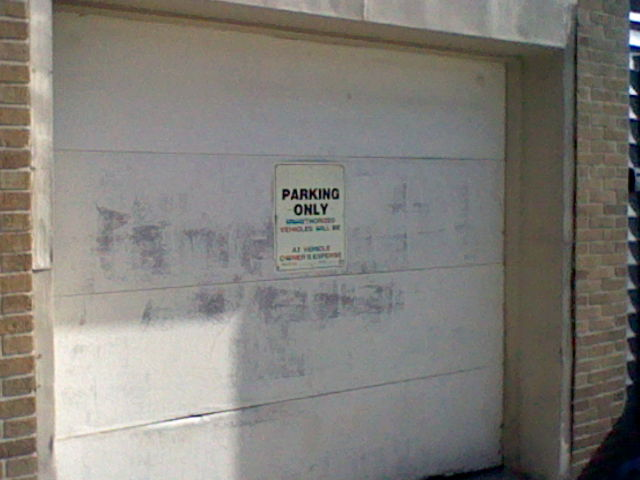A funny sign I see on my walk home from work. It reads:
(blank)
PARKING ONLY
UNAUTHORIZED
VEHICLES WILL BE
(blank)
AT OWNERS EXPENSE.
Page 5
October 18, 2024
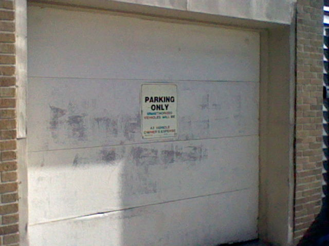A funny sign I see on my walk home from work. It reads:
(blank)
PARKING ONLY
UNAUTHORIZED
VEHICLES WILL BE
(blank)
AT OWNERS EXPENSE.
October 5, 2024
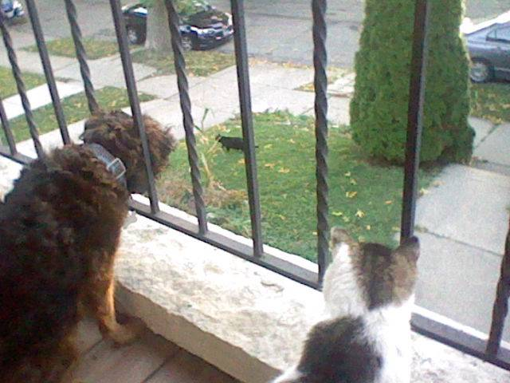Herman and Bobby were spying on this cat that was in our yard. So stealthy! So sneaky!!
October 4, 2024
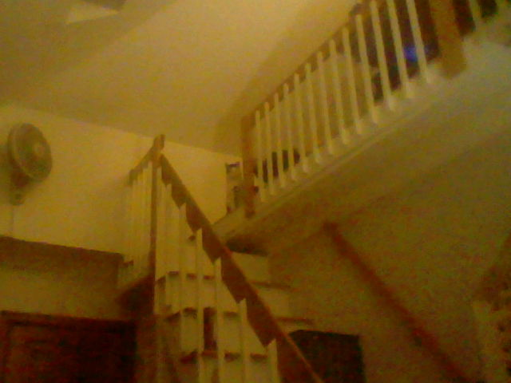Herman looking at all which is his (everything). His kingdom.
October 1, 2024
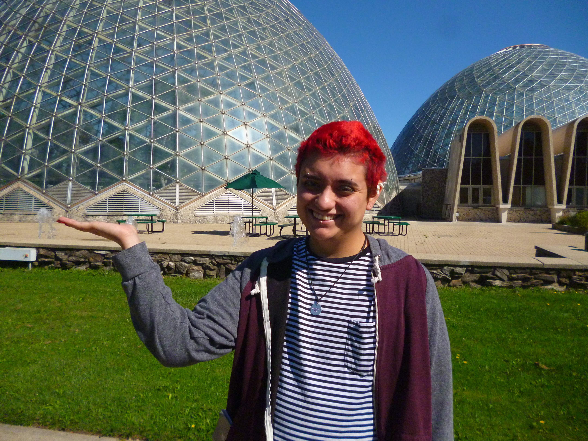Can you believe how STRONG he is?? I can NOT believe he can hold that entire dome!! We got banned for doing that.
October 1, 2024 (11:52 am)
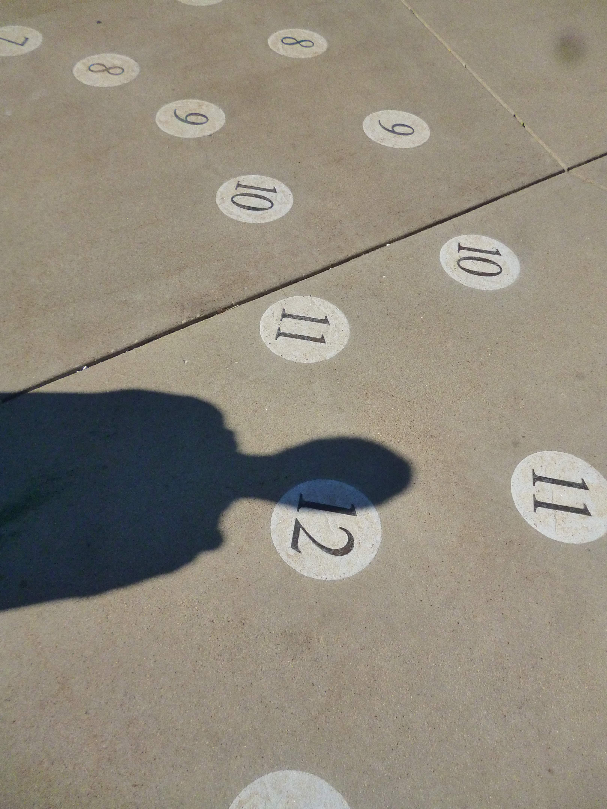 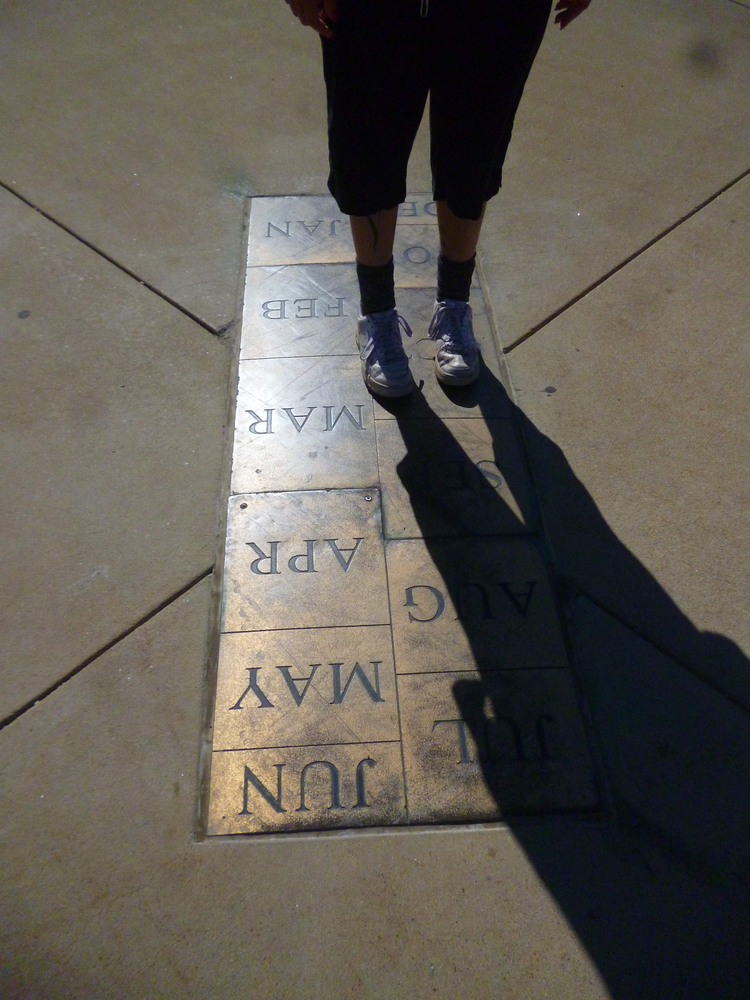David got to experience being a sundial. Super cool! This is at the horticulture domes in Milwaukee.
October 1, 2024
GAY GAY GAY GAY GAY (in a way).
September 13, 2024
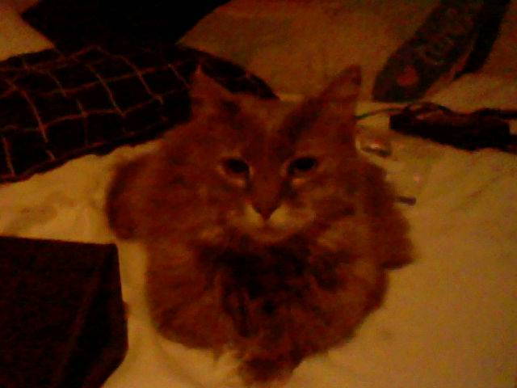First Teala feature!! Teala is Badger's cat and she's a little sweetheart. She has teeth, Herman has none. It's very jarring when she yawns and her mouth is full of knives.
September 11, 2024
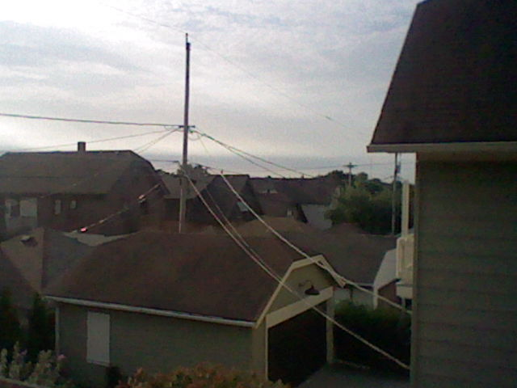I was supposed to remember something... hmmm.. what was it.. ah I can't recall..
September 10, 2024
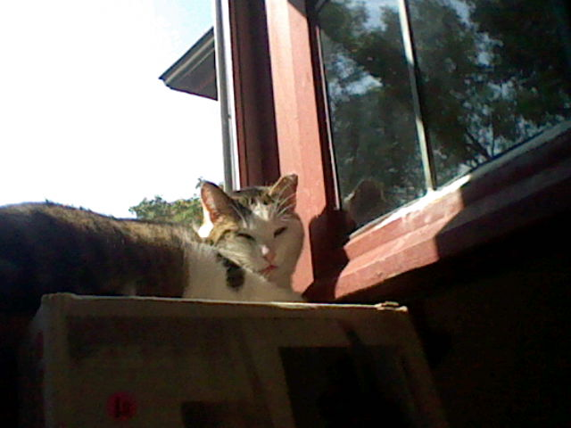Herman enjoying the beautiful weather.
September 4, 2024
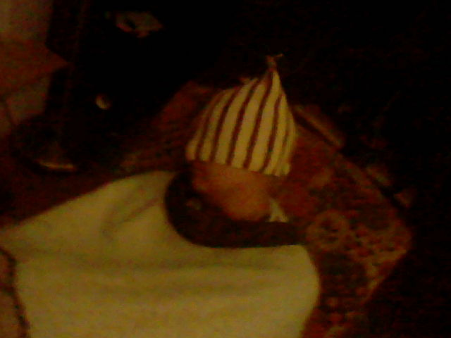David's favorite activity may be sleeping. He swore he wouldn't fall asleep!!